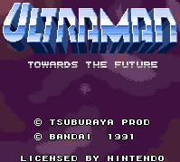

Ultraman - SNES Games

- US Title: Ultraman: Towards the Future
- Company: Bandai
- Date Released: 6 April 1991
- Price (in yen): 7800
- Genre: Fighting game
Controls
- A button: Kick
- B button: Punch
- X button: Jump
- Y button: Fire Energy Bolt
- L button: [not used]
- R button: [not used]
- Start: Pause
- Select: [not used]
During the action, you can fire various energy blasts depending on how long you let the energy meter grow. Some
other moves include a backflip (Down+Back), a forward roll (Down+Forward), and a super jump
(Up+Back+X or Up+Forward+X).
From Don Switzer:
At the title screen, press and hold Select then press Start . It will take you to an options screen.
Anime Video Game Resource Center © 1998 by Luis A. Cruz